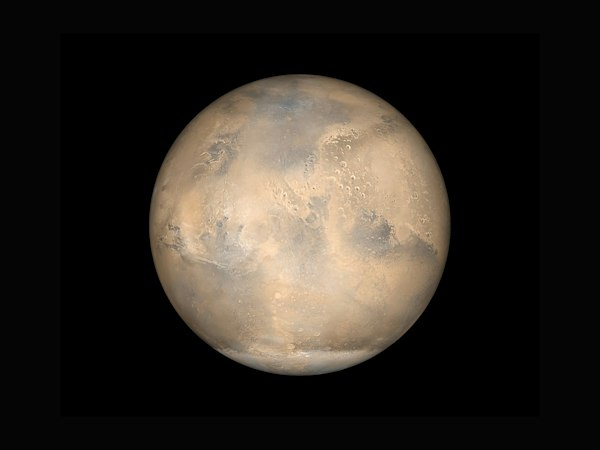

Планета земної групи
Марс
Червона пустельна планета з тонкою атмосферою та полярними шапками з водяного льоду і сухого льоду.
- Діаметр: 6 779 км (у 2 рази менший за Землю)
- Супутники: Фобос і Деймос
- Особливість: Каньйон Долина Марінера завдовжки 4 000 км